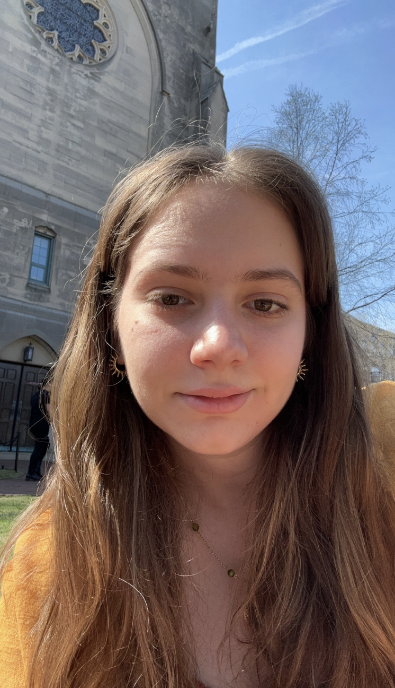

Home

My name is Yasemin Nurluoglu, and I am Turkish student at Boston University. I double major in Pure Mathematics and Computer Science, and minor in Women, Gender, and Sexuality studies. I am interested in Calculus, Statistic and Web App Development. I am currently a junior and my expected graduate date is May 2026.
I am currently studying abroad in London! I'm participating in BU London study abroad program for computer science. I currently own 6 cats and 2 dogs, who live with my family back in Turkey.
Here is a link to my GitHub where you can access the projects that I have done! Github